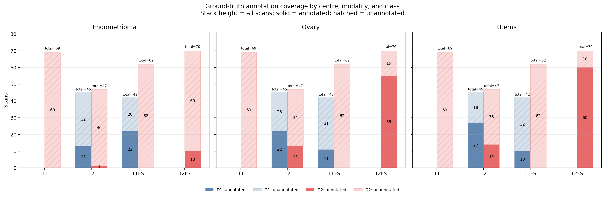
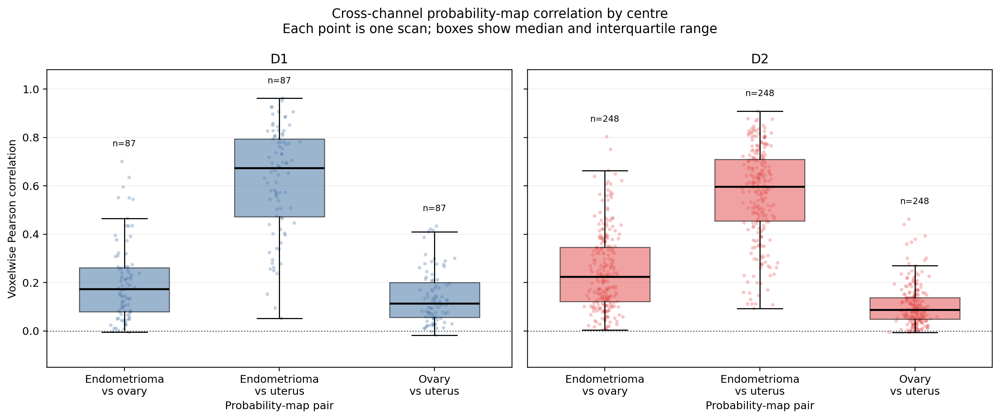
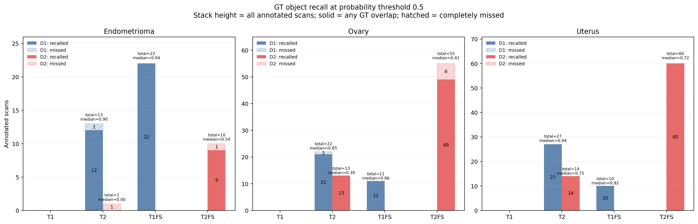
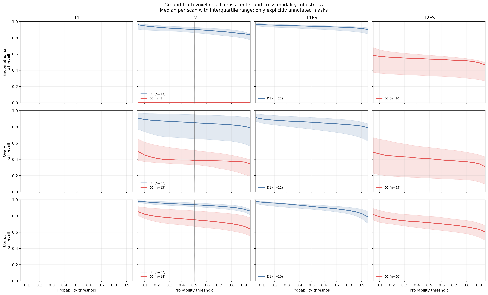

Endometriosis: Do NOT fully trust FM – Question it
Hierarchical anatomical reasoning and statistical rejection




Ground-truth recall audit
Operating threshold: 0.5. Median [IQR] across explicitly annotated scans. Missing domain–modality combinations are not interpreted as negatives.
| threshold | Class | Domain | Modality | Annotated scans | Recall @ 0.1 | Recall @ 0.5 | Recall @ 0.9 |
|---|---|---|---|---|---|---|---|
| endometrioma | D1 | T1FS | 22 | 0.962 [0.940, 0.976] | 0.942 [0.909, 0.955] | 0.916 [0.866, 0.933] | |
| endometrioma | D1 | T2 | 13 | 0.948 [0.897, 0.966] | 0.904 [0.863, 0.929] | 0.851 [0.795, 0.876] | |
| endometrioma | D2 | T2 | 1 | 0.000 [0.000, 0.000] | 0.000 [0.000, 0.000] | 0.000 [0.000, 0.000] | |
| endometrioma | D2 | T2FS | 10 | 0.573 [0.364, 0.653] | 0.538 [0.331, 0.586] | 0.493 [0.284, 0.520] | |
| ovary | D1 | T1FS | 11 | 0.899 [0.847, 0.953] | 0.858 [0.770, 0.917] | 0.810 [0.665, 0.862] | |
| ovary | D1 | T2 | 22 | 0.892 [0.741, 0.966] | 0.852 [0.655, 0.952] | 0.807 [0.593, 0.923] | |
| ovary | D2 | T2 | 13 | 0.454 [0.373, 0.613] | 0.389 [0.334, 0.513] | 0.368 [0.215, 0.418] | |
| ovary | D2 | T2FS | 55 | 0.468 [0.210, 0.649] | 0.408 [0.169, 0.547] | 0.346 [0.123, 0.457] | |
| uterus | D1 | T1FS | 10 | 0.970 [0.937, 0.981] | 0.917 [0.882, 0.938] | 0.831 [0.769, 0.884] | |
| uterus | D1 | T2 | 27 | 0.975 [0.955, 0.987] | 0.938 [0.914, 0.962] | 0.884 [0.848, 0.912] | |
| uterus | D2 | T2 | 14 | 0.823 [0.769, 0.906] | 0.754 [0.672, 0.865] | 0.673 [0.584, 0.805] | |
| uterus | D2 | T2FS | 60 | 0.791 [0.722, 0.870] | 0.717 [0.638, 0.797] | 0.635 [0.539, 0.712] |
| Scan | ID | Final | Reason | Stage 1 · Anatomical reasoning | Stage 2 · Inter-class rank statistics | Stage 3 · Intra-class equivalence | |||||||||||||||||||
|---|---|---|---|---|---|---|---|---|---|---|---|---|---|---|---|---|---|---|---|---|---|---|---|---|---|
| Pass | Path | Uterus repair | Morphology | Sphericity | Elongation | Uterus ΔS | Ovary ΔS | Ovary surface | Pass | q uterus | Effect uterus | q ovary | Effect ovary | q local | Effect local | Pass | Credible ref | Reference | Joint distance | q intra | Effect intra | ||||
D1-derived spatial priors
{
"uterus_ovary_distance_min_mm": 28.919339836476798,
"uterus_ovary_distance_max_mm": 80.34581863257115,
"uterus_ovary_distance_median_mm": 46.19857571182406,
"uterus_ovary_delta_r_min_mm": -56.95180047797167,
"uterus_ovary_delta_r_max_mm": 66.91039218775617,
"uterus_ovary_delta_a_min_mm": -77.9852523584235,
"uterus_ovary_delta_a_max_mm": 47.64691429716311,
"uterus_ovary_delta_s_min_mm": -27.761998570158642,
"uterus_ovary_delta_s_max_mm": 47.37463167263278,
"uterus_ovary_abs_delta_r_median_mm": 34.65748592725825,
"uterus_ovary_delta_a_median_mm": -7.553844614026232,
"uterus_ovary_delta_s_median_mm": 16.393947780241717,
"endometrioma_uterus_distance_min_mm": 22.431150256810803,
"endometrioma_uterus_distance_max_mm": 109.57919205495038,
"endometrioma_uterus_delta_r_min_mm": -84.65533937498755,
"endometrioma_uterus_delta_r_max_mm": 97.02145133341777,
"endometrioma_uterus_delta_a_min_mm": -69.35245146901153,
"endometrioma_uterus_delta_a_max_mm": 49.79166792078732,
"endometrioma_uterus_delta_s_min_mm": -66.63317747554899,
"endometrioma_uterus_delta_s_max_mm": 69.76285699013235,
"endometrioma_ovary_delta_r_min_mm": -117.46039331836204,
"endometrioma_ovary_delta_r_max_mm": 120.34719804485266,
"endometrioma_ovary_delta_a_min_mm": -37.72635979716814,
"endometrioma_ovary_delta_a_max_mm": 74.11768728035908,
"endometrioma_ovary_delta_s_min_mm": -100.06834794261658,
"endometrioma_ovary_delta_s_max_mm": 50.53902136721734,
"endometrioma_ovary_surface_max_mm": 30.0,
"endometrioma_volume_min_mm3": 20.0,
"endometrioma_volume_max_mm3": 496703.6787600856,
"endometrioma_sphericity_min": 0.05,
"endometrioma_sphericity_max": 1.0,
"endometrioma_elongation_min": 1.0,
"endometrioma_elongation_max": 20.0,
"endometrioma_superior_extent_min_mm": 1.3634546923905322,
"endometrioma_superior_extent_max_mm": 135.30446332200967,
"n_uterus_ovary_pairs": 35,
"n_endometrioma_uterus_pairs": 52,
"n_endometrioma_ovary_pairs": 51
}